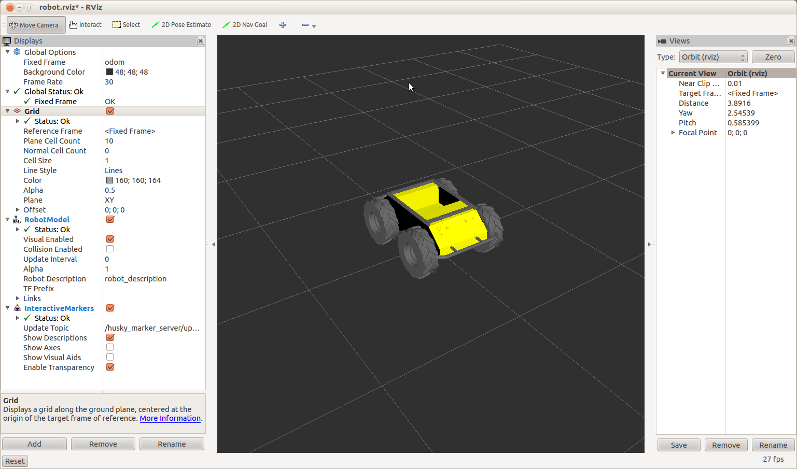
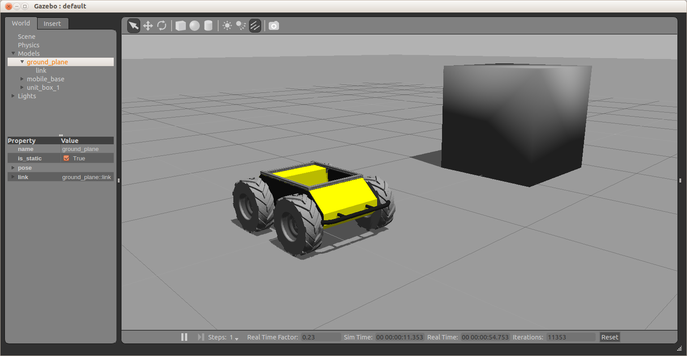
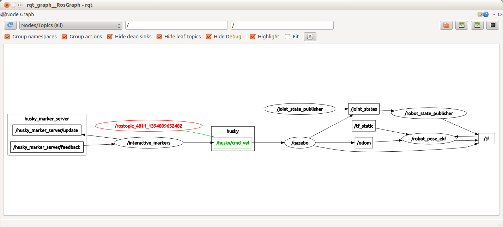
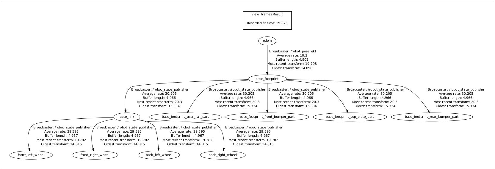

Drive a Husky¶
Updating the Virtual Machine¶
Open a terminal window (Ctrl + Alt + T), and enter the following:
sudo apt-get update
sudo apt-get install ros-indigo-husky-desktop
sudo apt-get install ros-indigo-husky-simulator
Running a Virtual Husky¶
Open a terminal window, and enter:
roslaunch husky_gazebo husky_empty_world.launch
Open another terminal window, and enter:
roslaunch husky_viz view_robot.launch
You should be given two windows, both showing a yellow, rugged robot (Husky!)
RViz
{kind=link}
Gazebo
{kind=link}
The left one shown is Gazebo. This is where we get a realistic simulation of our robot, including wheel slippage, skidding, and inertia. We can add objects to this simulation, such as the cube above, or even entire maps of real places.
The right window is RViz. This tool allows us to see sensor data from a robot, and give it commands (in a future post).
We can now command the robot to go forwards. Open a terminal window, and copy the following:
rostopic pub /husky_velocity_controller/cmd_vel geometry_msgs/Twist "linear:
x: 0.5
y: 0.0
z: 0.0
angular:
x: 0.0
y: 0.0
z: 0.0" -r 10
In the above command, we publish to the /husky_velocity_controller/cmd_vel topic, of topic type geometry_msgs/Twist. The data we publish tells the simulated Husky to go forwards at 0.5m/s, without any rotation. You should see your Husky move forwards. In the gazebo window, you might notice simulated wheel slip, and skidding.
Using rqt_graph¶
We can also see the structure of how topics are passed around the system. Leave the publishing window running, and open a terminal window. Type in:
rosrun rqt_graph rqt_graph
This command generates a representation of how the nodes and topics running on the current ROS Master are related. You should get something similar to the following:
The highlighted node and arrow show the topic that you are publishing to the simulated Husky. This Husky then goes on to update the gazebo virtual environment, which takes care of movement of the joints (wheels) and the physics of the robot. The rqt_graph command is very handy to use, when you are unsure who is publishing to what in ROS. Once you figure out what topic you are interested in, you can see the content of the topic using rostopic echo.
Using tf¶
In ROS, tf is a special topic that keeps track of coordinate frames, and how they relate to each other. So, our simulated Husky starts at (0,0,0) in the world coordinate frame. When the Husky moves, it’s own coordinate frame changes. Each wheel has a coordinate frame that tracks how it is rotating, and where it is. Generally, anything on the robot that is not fixed in space, will have a tf describing it. In the rqt_graph section, you can see that the /tf topic is published to and subscribed from by many different nodes.
One intuitive way to see how the tf topic is structured for a robot is to use the view_frames tool provided by ROS. Open a terminal window. Type in:
rosrun tf view_frames
Wait for this to complete, and then type in:
evince frames.pdf
This will bring up something similar to the following image.
Here we can see that all four wheel are referenced to the base_link. We also see that the odom topic is driving the reference of the whole robot. This means that if you write to the odom topic (IE, when you publish to the /cmd_vel topic) then the whole robot will move.